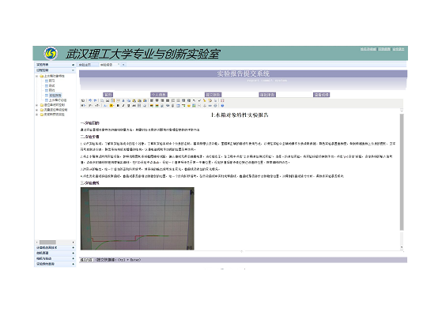
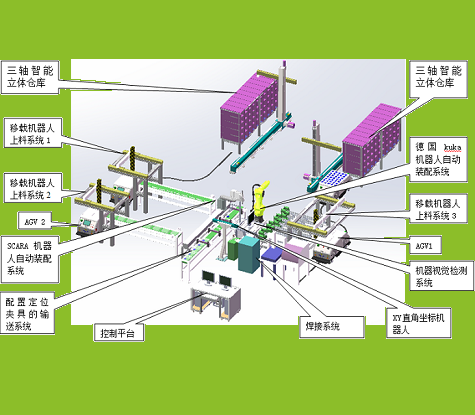
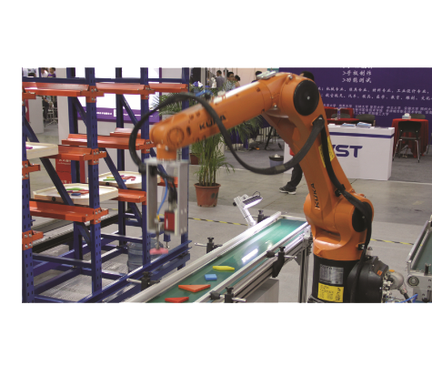

科研项目

实验室网络平台
“融合web2.0技术和面向创新实践能力培养的自动化实验室网络平台”旨在构建具有自主知识产权 B/S 结构网络平台，以实现面向自动化学院本科生创新能力培养、规范实验教学新模式运行。系统采用NGINX作为方向代理和容积服务器，在服务端部署应用服务器集成多种应用服务，在前端浏览器中实现静态网页、前端脚本和服务端服务的聚合和显示。>>详细
电路板柔性生产线
电路板柔性生产线是一套基于先进工业制造理念研制的围绕电路板的智能化生产、加工、装配、仓储、数字化物流跟踪等过程的智能化柔性生产线，在生产管理及物流调度软件系统方面，通过合理的统筹、优化算法，结合网络技术及现场总线技术，实现了生产过程、物流仓储的高效、智能。>>详细


工业自动化综合实验室
工业自动化综合实验室为面向自动化学院教学需求专业定制的工业级系统综合实验室，满足自动化类为主，并涵盖信息、电子、计算机、工业机器人等诸多领域的专业核心技术的教学、科研和实训需求。>>详细